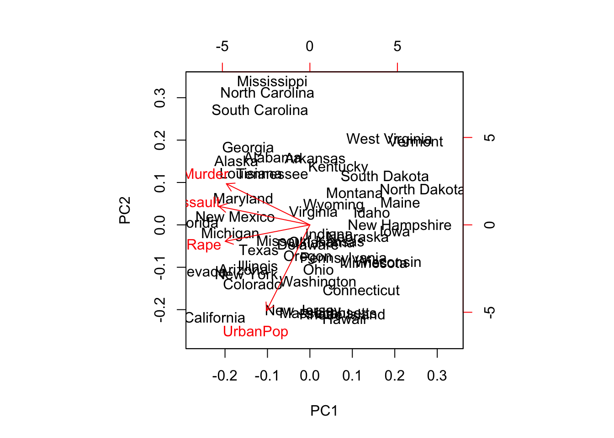
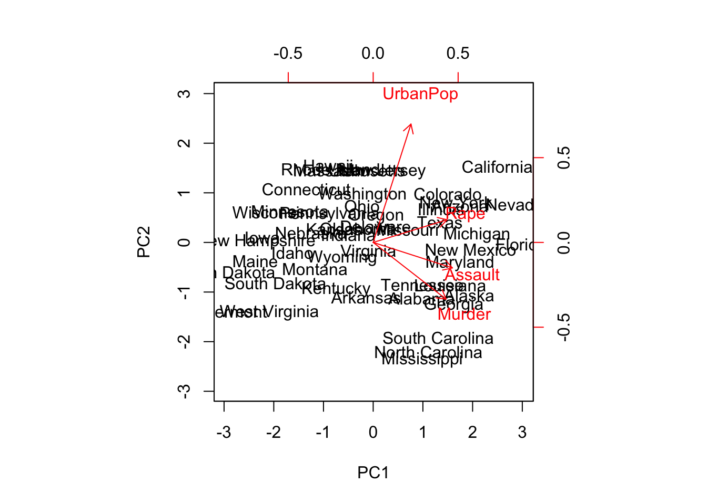
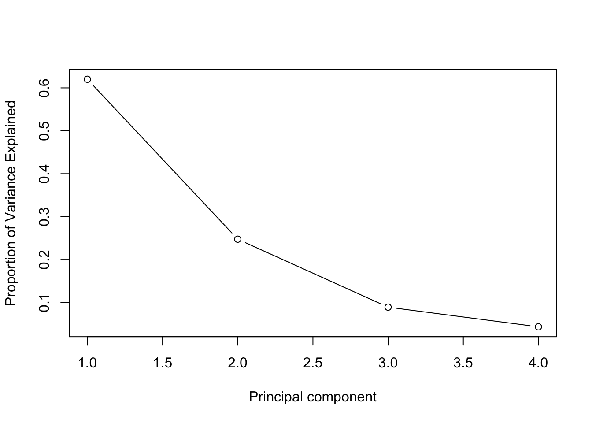
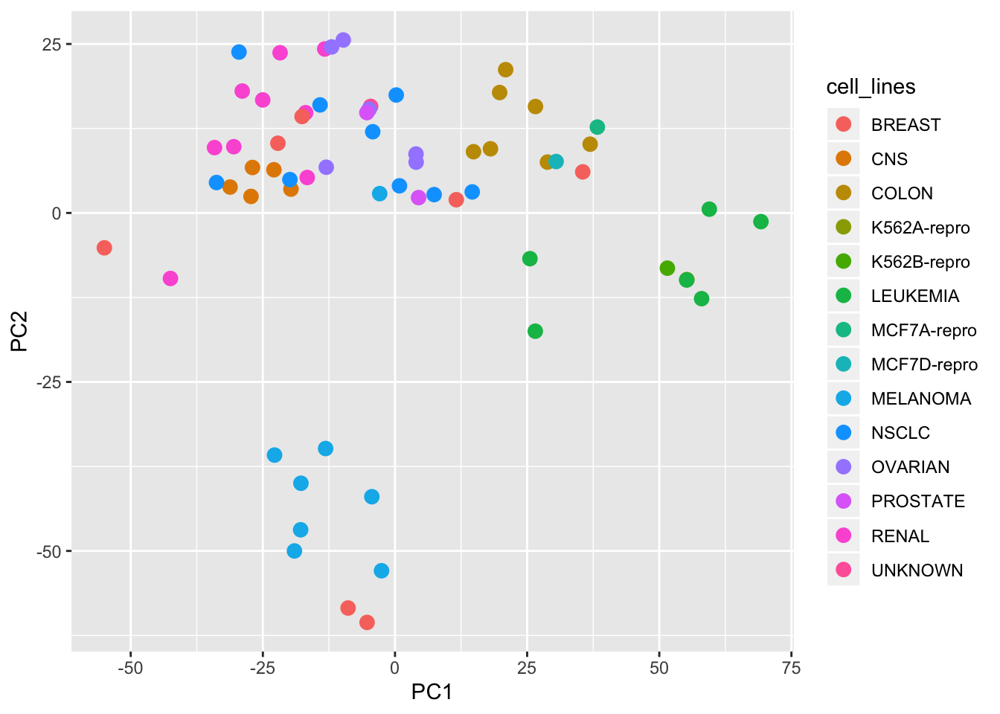
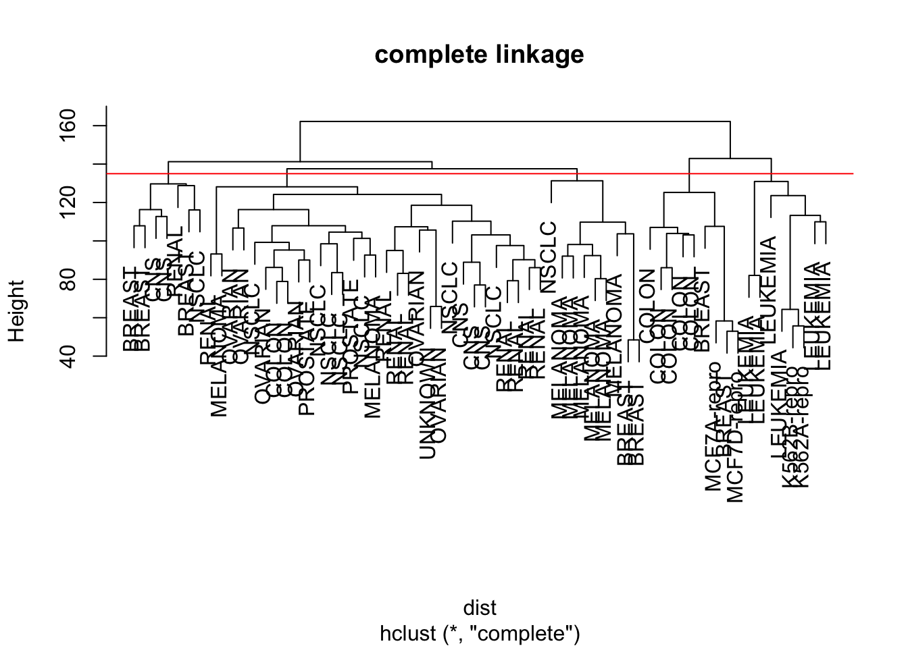
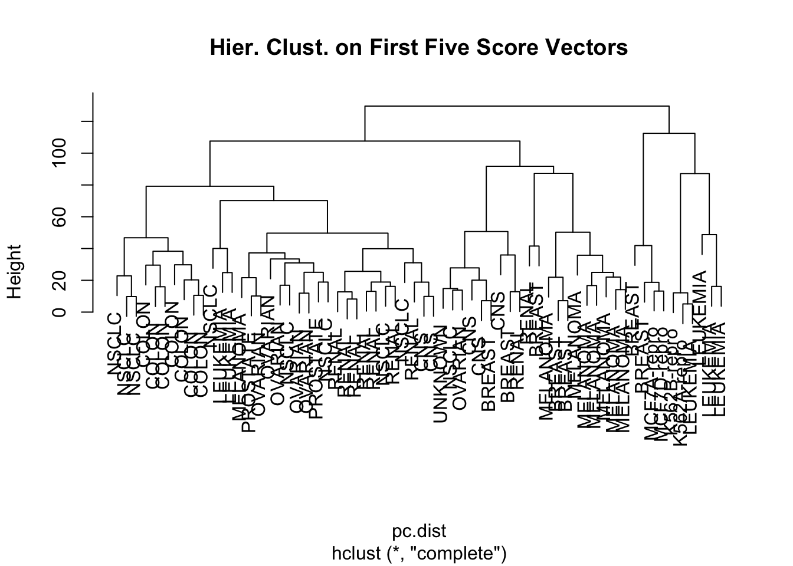
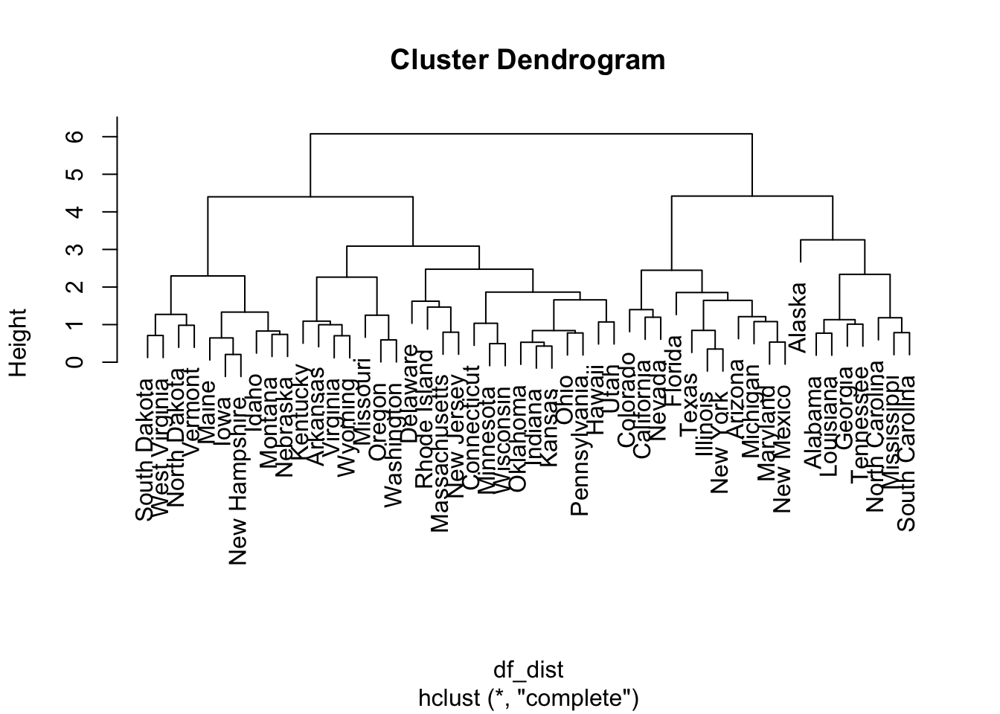
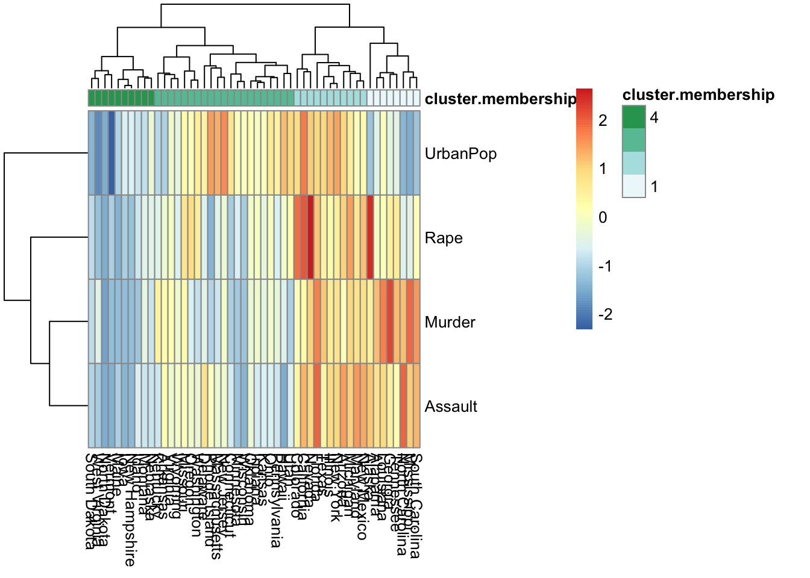

not interested in prediction
then, for what?
\[Z_1 = \phi_{11}X_1 + \phi_{21}X_2 + ... + \phi_{p1}X_p\]
\[\sum_{j=1}^p \phi^2_{j1} = 1\]
loading vector (length=p)
\[\phi_1 = (\phi_{11}, \phi_{21},,,\phi_{p1})^T\]
principal component scores (length=n)
\[(z_{11}, z_{21},,, z_{n1})\]
states = row.names(USArrests)
states## [1] "Alabama" "Alaska" "Arizona" "Arkansas"
## [5] "California" "Colorado" "Connecticut" "Delaware"
## [9] "Florida" "Georgia" "Hawaii" "Idaho"
## [13] "Illinois" "Indiana" "Iowa" "Kansas"
## [17] "Kentucky" "Louisiana" "Maine" "Maryland"
## [21] "Massachusetts" "Michigan" "Minnesota" "Mississippi"
## [25] "Missouri" "Montana" "Nebraska" "Nevada"
## [29] "New Hampshire" "New Jersey" "New Mexico" "New York"
## [33] "North Carolina" "North Dakota" "Ohio" "Oklahoma"
## [37] "Oregon" "Pennsylvania" "Rhode Island" "South Carolina"
## [41] "South Dakota" "Tennessee" "Texas" "Utah"
## [45] "Vermont" "Virginia" "Washington" "West Virginia"
## [49] "Wisconsin" "Wyoming"names(USArrests)## [1] "Murder" "Assault" "UrbanPop" "Rape"summary(USArrests)## Murder Assault UrbanPop Rape
## Min. : 0.800 Min. : 45.0 Min. :32.00 Min. : 7.30
## 1st Qu.: 4.075 1st Qu.:109.0 1st Qu.:54.50 1st Qu.:15.07
## Median : 7.250 Median :159.0 Median :66.00 Median :20.10
## Mean : 7.788 Mean :170.8 Mean :65.54 Mean :21.23
## 3rd Qu.:11.250 3rd Qu.:249.0 3rd Qu.:77.75 3rd Qu.:26.18
## Max. :17.400 Max. :337.0 Max. :91.00 Max. :46.00apply(USArrests, 2, var)## Murder Assault UrbanPop Rape
## 18.97047 6945.16571 209.51878 87.72916pr.out = prcomp(USArrests, scale = TRUE)
names(pr.out)## [1] "sdev" "rotation" "center" "scale" "x"pr.out$rotation # loading vectors ## PC1 PC2 PC3 PC4
## Murder -0.5358995 0.4181809 -0.3412327 0.64922780
## Assault -0.5831836 0.1879856 -0.2681484 -0.74340748
## UrbanPop -0.2781909 -0.8728062 -0.3780158 0.13387773
## Rape -0.5434321 -0.1673186 0.8177779 0.08902432pr.out$x # pc scores## PC1 PC2 PC3 PC4
## Alabama -0.97566045 1.12200121 -0.43980366 0.154696581
## Alaska -1.93053788 1.06242692 2.01950027 -0.434175454
## Arizona -1.74544285 -0.73845954 0.05423025 -0.826264240
## Arkansas 0.13999894 1.10854226 0.11342217 -0.180973554
## California -2.49861285 -1.52742672 0.59254100 -0.338559240
## Colorado -1.49934074 -0.97762966 1.08400162 0.001450164
## Connecticut 1.34499236 -1.07798362 -0.63679250 -0.117278736
## Delaware -0.04722981 -0.32208890 -0.71141032 -0.873113315
## Florida -2.98275967 0.03883425 -0.57103206 -0.095317042
## Georgia -1.62280742 1.26608838 -0.33901818 1.065974459
## Hawaii 0.90348448 -1.55467609 0.05027151 0.893733198
## Idaho 1.62331903 0.20885253 0.25719021 -0.494087852
## Illinois -1.36505197 -0.67498834 -0.67068647 -0.120794916
## Indiana 0.50038122 -0.15003926 0.22576277 0.420397595
## Iowa 2.23099579 -0.10300828 0.16291036 0.017379470
## Kansas 0.78887206 -0.26744941 0.02529648 0.204421034
## Kentucky 0.74331256 0.94880748 -0.02808429 0.663817237
## Louisiana -1.54909076 0.86230011 -0.77560598 0.450157791
## Maine 2.37274014 0.37260865 -0.06502225 -0.327138529
## Maryland -1.74564663 0.42335704 -0.15566968 -0.553450589
## Massachusetts 0.48128007 -1.45967706 -0.60337172 -0.177793902
## Michigan -2.08725025 -0.15383500 0.38100046 0.101343128
## Minnesota 1.67566951 -0.62590670 0.15153200 0.066640316
## Mississippi -0.98647919 2.36973712 -0.73336290 0.213342049
## Missouri -0.68978426 -0.26070794 0.37365033 0.223554811
## Montana 1.17353751 0.53147851 0.24440796 0.122498555
## Nebraska 1.25291625 -0.19200440 0.17380930 0.015733156
## Nevada -2.84550542 -0.76780502 1.15168793 0.311354436
## New Hampshire 2.35995585 -0.01790055 0.03648498 -0.032804291
## New Jersey -0.17974128 -1.43493745 -0.75677041 0.240936580
## New Mexico -1.96012351 0.14141308 0.18184598 -0.336121113
## New York -1.66566662 -0.81491072 -0.63661186 -0.013348844
## North Carolina -1.11208808 2.20561081 -0.85489245 -0.944789648
## North Dakota 2.96215223 0.59309738 0.29824930 -0.251434626
## Ohio 0.22369436 -0.73477837 -0.03082616 0.469152817
## Oklahoma 0.30864928 -0.28496113 -0.01515592 0.010228476
## Oregon -0.05852787 -0.53596999 0.93038718 -0.235390872
## Pennsylvania 0.87948680 -0.56536050 -0.39660218 0.355452378
## Rhode Island 0.85509072 -1.47698328 -1.35617705 -0.607402746
## South Carolina -1.30744986 1.91397297 -0.29751723 -0.130145378
## South Dakota 1.96779669 0.81506822 0.38538073 -0.108470512
## Tennessee -0.98969377 0.85160534 0.18619262 0.646302674
## Texas -1.34151838 -0.40833518 -0.48712332 0.636731051
## Utah 0.54503180 -1.45671524 0.29077592 -0.081486749
## Vermont 2.77325613 1.38819435 0.83280797 -0.143433697
## Virginia 0.09536670 0.19772785 0.01159482 0.209246429
## Washington 0.21472339 -0.96037394 0.61859067 -0.218628161
## West Virginia 2.08739306 1.41052627 0.10372163 0.130583080
## Wisconsin 2.05881199 -0.60512507 -0.13746933 0.182253407
## Wyoming 0.62310061 0.31778662 -0.23824049 -0.164976866biplot(pr.out)
pr.out$rotation = -pr.out$rotation # loading vectors
pr.out$x = -pr.out$x # pc scores
biplot(pr.out, scale = 0)
pr.var = pr.out$sdev^2
pr.var## [1] 2.4802416 0.9897652 0.3565632 0.1734301pve = pr.var/sum(pr.var)
pve## [1] 0.62006039 0.24744129 0.08914080 0.04335752plot(pve, xlab = "Principal component", ylab = "Proportion of Variance Explained", type = "b") # scree plot 
library(ISLR)
class(NCI60) # NCI60: 64개 암세포주에 대한 6830개의 유전자 발현 관측치 ## [1] "list"names(NCI60)## [1] "data" "labs"nci.labs = NCI60$labs
nci.labs## [1] "CNS" "CNS" "CNS" "RENAL" "BREAST"
## [6] "CNS" "CNS" "BREAST" "NSCLC" "NSCLC"
## [11] "RENAL" "RENAL" "RENAL" "RENAL" "RENAL"
## [16] "RENAL" "RENAL" "BREAST" "NSCLC" "RENAL"
## [21] "UNKNOWN" "OVARIAN" "MELANOMA" "PROSTATE" "OVARIAN"
## [26] "OVARIAN" "OVARIAN" "OVARIAN" "OVARIAN" "PROSTATE"
## [31] "NSCLC" "NSCLC" "NSCLC" "LEUKEMIA" "K562B-repro"
## [36] "K562A-repro" "LEUKEMIA" "LEUKEMIA" "LEUKEMIA" "LEUKEMIA"
## [41] "LEUKEMIA" "COLON" "COLON" "COLON" "COLON"
## [46] "COLON" "COLON" "COLON" "MCF7A-repro" "BREAST"
## [51] "MCF7D-repro" "BREAST" "NSCLC" "NSCLC" "NSCLC"
## [56] "MELANOMA" "BREAST" "BREAST" "MELANOMA" "MELANOMA"
## [61] "MELANOMA" "MELANOMA" "MELANOMA" "MELANOMA"table(nci.labs) # 14개 유형 ## nci.labs
## BREAST CNS COLON K562A-repro K562B-repro LEUKEMIA
## 7 5 7 1 1 6
## MCF7A-repro MCF7D-repro MELANOMA NSCLC OVARIAN PROSTATE
## 1 1 8 9 6 2
## RENAL UNKNOWN
## 9 1nci.data = NCI60$datapr.out = prcomp(nci.data, scale = TRUE) library(ggplot2)
df = data.frame(pr.out$x[,c(1,2,3)], nci.labs)
ggplot(data = df, aes(x=PC1, y=PC2, col = nci.labs)) + geom_point(size = 3)
summary(pr.out)## Importance of components:
## PC1 PC2 PC3 PC4 PC5
## Standard deviation 27.8535 21.48136 19.82046 17.03256 15.97181
## Proportion of Variance 0.1136 0.06756 0.05752 0.04248 0.03735
## Cumulative Proportion 0.1136 0.18115 0.23867 0.28115 0.31850
## PC6 PC7 PC8 PC9 PC10
## Standard deviation 15.72108 14.47145 13.54427 13.14400 12.73860
## Proportion of Variance 0.03619 0.03066 0.02686 0.02529 0.02376
## Cumulative Proportion 0.35468 0.38534 0.41220 0.43750 0.46126
## PC11 PC12 PC13 PC14 PC15
## Standard deviation 12.68672 12.15769 11.83019 11.62554 11.43779
## Proportion of Variance 0.02357 0.02164 0.02049 0.01979 0.01915
## Cumulative Proportion 0.48482 0.50646 0.52695 0.54674 0.56590
## PC16 PC17 PC18 PC19 PC20
## Standard deviation 11.00051 10.65666 10.48880 10.43518 10.3219
## Proportion of Variance 0.01772 0.01663 0.01611 0.01594 0.0156
## Cumulative Proportion 0.58361 0.60024 0.61635 0.63229 0.6479
## PC21 PC22 PC23 PC24 PC25 PC26
## Standard deviation 10.14608 10.0544 9.90265 9.64766 9.50764 9.33253
## Proportion of Variance 0.01507 0.0148 0.01436 0.01363 0.01324 0.01275
## Cumulative Proportion 0.66296 0.6778 0.69212 0.70575 0.71899 0.73174
## PC27 PC28 PC29 PC30 PC31 PC32
## Standard deviation 9.27320 9.0900 8.98117 8.75003 8.59962 8.44738
## Proportion of Variance 0.01259 0.0121 0.01181 0.01121 0.01083 0.01045
## Cumulative Proportion 0.74433 0.7564 0.76824 0.77945 0.79027 0.80072
## PC33 PC34 PC35 PC36 PC37 PC38
## Standard deviation 8.37305 8.21579 8.15731 7.97465 7.90446 7.82127
## Proportion of Variance 0.01026 0.00988 0.00974 0.00931 0.00915 0.00896
## Cumulative Proportion 0.81099 0.82087 0.83061 0.83992 0.84907 0.85803
## PC39 PC40 PC41 PC42 PC43 PC44
## Standard deviation 7.72156 7.58603 7.45619 7.3444 7.10449 7.0131
## Proportion of Variance 0.00873 0.00843 0.00814 0.0079 0.00739 0.0072
## Cumulative Proportion 0.86676 0.87518 0.88332 0.8912 0.89861 0.9058
## PC45 PC46 PC47 PC48 PC49 PC50
## Standard deviation 6.95839 6.8663 6.80744 6.64763 6.61607 6.40793
## Proportion of Variance 0.00709 0.0069 0.00678 0.00647 0.00641 0.00601
## Cumulative Proportion 0.91290 0.9198 0.92659 0.93306 0.93947 0.94548
## PC51 PC52 PC53 PC54 PC55 PC56
## Standard deviation 6.21984 6.20326 6.06706 5.91805 5.91233 5.73539
## Proportion of Variance 0.00566 0.00563 0.00539 0.00513 0.00512 0.00482
## Cumulative Proportion 0.95114 0.95678 0.96216 0.96729 0.97241 0.97723
## PC57 PC58 PC59 PC60 PC61 PC62
## Standard deviation 5.47261 5.2921 5.02117 4.68398 4.17567 4.08212
## Proportion of Variance 0.00438 0.0041 0.00369 0.00321 0.00255 0.00244
## Cumulative Proportion 0.98161 0.9857 0.98940 0.99262 0.99517 0.99761
## PC63 PC64
## Standard deviation 4.04124 2.148e-14
## Proportion of Variance 0.00239 0.000e+00
## Cumulative Proportion 1.00000 1.000e+00n개 관측치들을 K개 클러스터로 분할하는 방법: \(K^n\) 모든 가능한 경우들 중에서 within cluster variation 을 가장 작게만드는 분할을 찾지 않고 (global optimum), 대신 국소 최적값(local optimum)을 제공하는 알고리즘을 사용한다.
즉,
각 관측치에 1에서 K까지의 숫자를 랜덤하게 할당한다. 이것은 관측체에 대한 초기 클러스터 할당으로 작용한다.
클러스터 할당이 변하지 않을 때까지 다음을 반복한다.
bottom-up or agglomerative
dendrogram
distance measures… - euclidean distance
\[d_{euc}(x,y) = \sqrt{\sum_{i=1}^n(x_i - y_i)^2}\]
manhattan distance
\[d_{man}(x,y) = \sum_{i=1}^n |{(x_i - y_i)|}\]
pearson correlation distance
\[d_{cor}(x, y) = 1 - \frac{\sum\limits_{i=1}^n (x_i - \bar{x})(y_i - \bar{y})}{\sqrt{\sum\limits_{i=1}^n(x_i - \bar{x})^2 \sum\limits_{i=1}^n(y_i -\bar{y})^2}}\]
스케일링
\[\frac{x_i - center(x)}{scale(x)}\]
linkage
- complete linkage
- average linkage
- single linkage
- centroid linkage
sd.data = scale(nci.data) # scaling data.dist = dist(sd.data)
hclust.complete = hclust(data.dist, method = "complete")
plot(hclust.complete, labels = nci.labs, main = "complete linkage")
hc.clusters = cutree(hclust.complete, 5)
table(hc.clusters, nci.labs)## nci.labs
## hc.clusters BREAST CNS COLON K562A-repro K562B-repro LEUKEMIA MCF7A-repro
## 1 0 3 2 0 0 0 0
## 2 3 2 0 0 0 0 0
## 3 0 0 0 1 1 6 0
## 4 2 0 5 0 0 0 1
## 5 2 0 0 0 0 0 0
## nci.labs
## hc.clusters MCF7D-repro MELANOMA NSCLC OVARIAN PROSTATE RENAL UNKNOWN
## 1 0 2 7 6 2 8 1
## 2 0 0 1 0 0 1 0
## 3 0 0 0 0 0 0 0
## 4 1 0 0 0 0 0 0
## 5 0 6 1 0 0 0 0abline(h=135, col="red")
set.seed(2)
km.out = kmeans(sd.data, 5, nstart = 20)
km.clusters = km.out$cluster
table(km.clusters, hc.clusters)## hc.clusters
## km.clusters 1 2 3 4 5
## 1 1 0 0 0 8
## 2 20 7 0 0 0
## 3 0 0 0 4 0
## 4 10 0 0 5 1
## 5 0 0 8 0 0pc.dist = dist(pr.out$x[,1:5])
hc.out = hclust(pc.dist)
plot(hc.out, labels = nci.labs, main = "Hier. Clust. on First Five Score Vectors")
hc.clusters = cutree(hc.out, 4)
table(hc.clusters, nci.labs)## nci.labs
## hc.clusters BREAST CNS COLON K562A-repro K562B-repro LEUKEMIA MCF7A-repro
## 1 0 2 7 0 0 2 0
## 2 5 3 0 0 0 0 0
## 3 0 0 0 1 1 4 0
## 4 2 0 0 0 0 0 1
## nci.labs
## hc.clusters MCF7D-repro MELANOMA NSCLC OVARIAN PROSTATE RENAL UNKNOWN
## 1 0 1 8 5 2 7 0
## 2 0 7 1 1 0 2 1
## 3 0 0 0 0 0 0 0
## 4 1 0 0 0 0 0 0set.seed(3)
pc.scale = scale(pr.out$x[,1:5])
km.out = kmeans(pc.scale, 4, nstart = 20)
table(km.out$cluster, hc.clusters)## hc.clusters
## 1 2 3 4
## 1 32 11 0 0
## 2 0 0 0 4
## 3 2 0 6 0
## 4 0 9 0 0df.scaled = scale(USArrests)
df.dist = dist(df.scaled) # row-wise distance matrix
hc.out = hclust(df.dist, method = "complete")
plot(hc.out)
hc.clusters = cutree(hc.out, 4)
cluster.membership = hc.clusters load package
library(pheatmap)mat = as.matrix(t(df.scaled))
apply(mat, 1, sd)## Murder Assault UrbanPop Rape
## 1 1 1 1pheatmap(mat,
cluster_rows = T,
# cellheight = 20,
annotation_col = data.frame(cluster.membership))